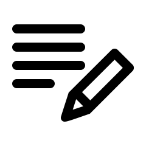

AcademixQuest
Tu Fuente Infinita de Preguntas y
Material de Estudio
Asegúrate de que el resumen sea más exacto y preciso incluyendo instrucciones adicionales para detallar aún más el contenido.
Subir PDF

Subir Texto
//carga el pdf
//le vamos a llamar luego
Subir Texto